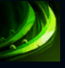
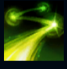
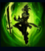
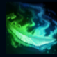
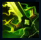

Master Yi
| MasterYi The Wuju Bladesman | |
|---|---|
| Release date | 21.02.2009 |
| Class | Skirmisher |
| Positions | Jungle |
| Resource | Mana |
| Range type | Melee |
| Adaptive type | Physical |
| Base statistics | |||
| Health | 599 – 2163 | Mana | 250.56 – 964.56 |
| Health regen. | 7.5 – 18.55 |
Mana regen. | 7.256 – 14.91 |
| Armor | 33 – 84 | Attack damage | 66 – 117 |
| Magic resist. | 32 – 53.25 | Crit. damage | 175% |
| Move. speed | 355 | Attack range | 125 |
Master Yi și-a călit trupul și și-a ascuțit mintea, până când gândul și fapta aproape că i s-au contopit. Deși apelează la violență numai în ultimă instanță, grația și viteza cu care își mânuiește sabia asigură întotdeauna un final rapid. Fiind unul din ultimii practicanți ai tehnicii ioniene Wuju, Master Yi și-a dedicat întreaga viață pentru a duce mai departe moștenirea poporului său: de a folosi Cele Șapte Lentile ale Clarviziunii pentru a găsi noi discipoli demni de a păși pe urmele sale. |  |
LOVITURĂ DUBLĂ La fiecare câteva atacuri de bază consecutive, Master Yi lovește de două ori. |
||
|---|---|---|---|---|
 |
LOVITURĂ ALFA Master Yi se teleportează pe câmpul de luptă cu o viteză amețitoare, producând daune fizice mai multor unități din calea sa și devenind imposibil de țintit. ''Lovitura alfa'' poate lovi critic și provoacă daune fizice bonus împotriva monștrilor. Atacurile de bază reduc timpul de reactivare al ''Loviturii alfa''. |
|||
 |
MEDITAȚIE Master Yi își revitalizează corpul cu puterea minții, refăcându-și viața și primind daune reduse pentru scurt timp. În plus, Master Yi câștigă cumuluri de ''Lovitură dublă'' și întrerupe temporar ''Tehnica Wuju'' și ''Highlander'' pe durata abilității. |
|||
|  |
TEHNICA WUJU
Atacurile de bază provoacă daune reale bonus. |
|||
 |
HIGHLANDER Master Yi se mișcă cu o agilitate nemaivăzută, care-i crește temporar viteza de mișcare și cea de atac, devenind imun la toate efectele de încetinire. Dacă abilitatea este activă, asasinatele și participările la asasinate îi extind durata. Asasinatele și participările la asasinate îi reduc în mod pasiv timpii de reactivare ai abilităților de bază. |